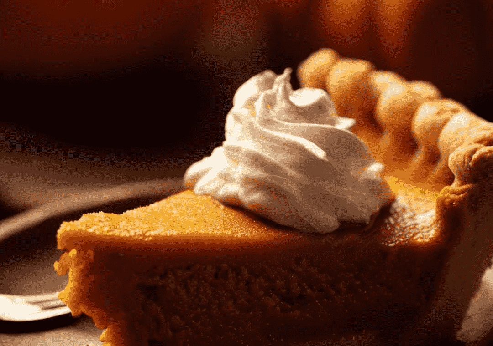

When autumn arrives, there's nothing quite like the warm aroma of a freshly baked pumpkin pie wafting through the kitchen. This classic dessert, with its buttery crust and velvety filling, is a staple for Thanksgiving and other fall celebrations. In this article, we'll guide you through the process of making the best pumpkin pie from scratch. Whether you're a seasoned baker or a novice in the kitchen, this easy-to-follow recipe will ensure a perfect pumpkin pie every time.
Preheat your oven to 425°F (220°C).
Roll out the pie crust and fit it into a 9-inch pie dish. Crimp the edges for a decorative finish. Place the pie dish in the refrigerator while you prepare the filling.
In a large mixing bowl, combine the pumpkin puree, granulated sugar, salt, cinnamon, ginger, cloves, and nutmeg. Mix until well combined.
In a separate bowl, beat the eggs. Add the beaten eggs to the pumpkin mixture and stir until fully incorporated.
Gradually add the evaporated milk to the pumpkin mixture, stirring constantly. This will create a smooth and creamy filling.
Remove the pie crust from the refrigerator and pour the pumpkin filling into the crust.
Place the pie in the preheated oven and bake at 425°F (220°C) for 15 minutes. Then, reduce the oven temperature to 350°F (175°C) and continue baking for an additional 40-50 minutes, or until the filling is set and a toothpick inserted into the center comes out clean.
Once baked, remove the pie from the oven and allow it to cool completely on a wire rack. Refrigerate for a few hours before serving to allow the flavors to meld.
Slice the pumpkin pie and serve it with a dollop of whipped cream, if desired. The rich, spiced flavors of the pie are the perfect complement to the smooth and creamy filling.
Making a delicious pumpkin pie is a rewarding experience that captures the essence of fall in every bite. With this classic pumpkin pie recipe, you can confidently create a dessert that will impress your family and friends. The blend of aromatic spices and silky pumpkin filling in a flaky crust will have everyone asking for seconds. Whether it's a Thanksgiving feast or a cozy evening at home, this pumpkin pie recipe is a timeless favorite that will warm both hearts and tummies.